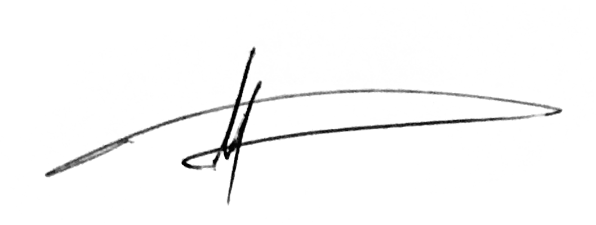

Dear MightyByte Hiring Team,
I am excited to apply for the Senior front-end engineer position at MightyByte. With over two decades of experience in software development, including extensive work with Next.js and Tailwind CSS, I believe I am well-suited to contribute to your mission of building awesome, scalable apps to power the future of tech.
Your job description aligns perfectly with my skills and experience:
- Next.js Expertise: I have significant experience developing with Next.js, leveraging its powerful features to create fast, SEO-friendly React applications.
- Tailwind CSS Proficiency: I am well-versed in using Tailwind CSS to create responsive, customizable user interfaces efficiently.
- Agile Development: I thrive in Agile environments and have a track record of delivering high-quality software in iterative cycles.
- Problem-Solving Skills: I excel at tackling complex challenges and pushing my creative abilities to find innovative solutions.
- Versatility: I enjoy working on diverse projects and adapting to different tools and technologies, which aligns well with your hybrid dev-firm/startup incubator model.
- Autonomy and Freedom: I appreciate working in environments that respect individual freedom and autonomy, which resonates with MightyByte's culture.
Throughout my career, I've demonstrated the ability to build great products that make a positive impact. At Redding Webmaster, I led the development of a scalable member portal that increased user engagement by 40% and reduced support tickets by 25%, showcasing my ability to deliver high-impact solutions.
I'm particularly excited about the opportunity to work on a variety of projects at MightyByte, from helping entrepreneurial NFL players bring their dreams to life to building solutions for booming enterprises. The chance to contribute to both client projects and internal startup ideas is incredibly appealing to me.
I am available immediately and would be thrilled to discuss how my skills and experiences align with MightyByte's goals. Thank you for considering my application. I look forward to the opportunity to contribute to your innovative team and help build awesome, scalable apps that power the future of tech.
Warm regards,

Sean Dinwiddie